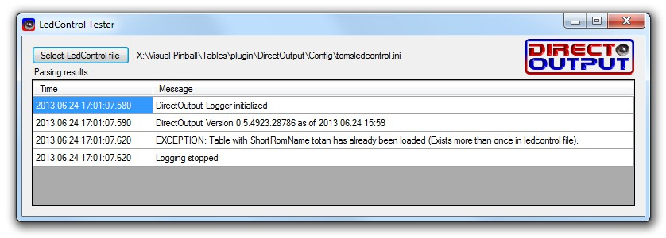

Introduction
The DirectOutput framework supports the use of the legacy directoutputconfig.ini files as well as the extended DirectOutputConfig.ini files as generated by the DOF config tool to control the cabinet outputs. Since this framework supports the use of more than one output controller/LedWiz, the use of more than one such file can be used.
To facilitate the use of the framework, the auto config function will automatically load ini files and select a table config from the data based on the RomName, if no xml table config can be found. But even if a xml table config file is available is is possible to use the directoutputconfig.ini/ledcontrol.ini configs together with xml table configs by setting the right option in the xml table config.
If you dont have a directoutputconfig.ini file for your cabinet, it is best if you go to the LedWiz ConfigTool Website and create a file matching your cabinet.
LedControl.ini files which worked for the legacy ledcontrol.vbs solution are working in DOF too and will generally create the same effects as the ledcontrol.vbs, but you might notice some small differences since the timing implementation of DOF is completely different from the old solution (DOF is much, much faster).
How it works
Since both types of supported ini files, do only specify the effects which are to be applied on certain outputs, but contain no information on the toys to be used, the DirectOutput framework uses a special type of toy to map the output definitions in the ini files to outputs resp. to the connected toys. This special type of toy is called LedWizEquivalent. It is basically a list of outputs, which typically all belong to the same output controller, and a number specifying the number of the ini file to be applied to the LedWizEquivalent toy. If necessary it is also possible to mix outputs of several output controllers in one LedwizEquivalent toy.
When configurations from ini files are to be used, the framework is matching the ini files against the LedWizEquivalentToys by their numbers and uses the output definitions of the toy, to determine which outputs are to be used for which column in the ini file. For these outputs the frameworks checks next if a matching toy has already been configured for those outputs. If a matching toy does already exist, it will be used, if no toy is found DOF will automatically create a toy of a matching type (RGBAToy or AnalogaAlphaToy). These toys are then used as targets for the effects specified in the columns of the ini files.
Once the toy to be used have been determined the DirectOutput framework will setup the effects for those toys based on the settings found in the columns of the ini file. Deppending on the settings one or several effects are used to create the desired results. Please read the paragraph on Setting parameters and the page on Effects for more information.
File locations
DOF will try to locate ini files in the following locations:
- Ini File Directory of Global Config if specified in the global configuration.
- Table directory as specified in the table name para when the framework is initialized.
- Global config directory which is usualy a subdirectory named config within the installation directory of the framework.
- Installation directory which is the directory containg the DirectOutput.dll.
DOF will check each of these directories for ini files containing configurations. These files can have the following names:
- directoutputconfig.ini resp. directoutputconfig{Number}.ini are the files for which the framework is looking first.
- ledcontrol.ini resp. ledcontrol{Number}.ini are the names the framework is looking for if no files named _directoutputconfig.ini__ can be found.
LedControl file numbering
Some types of output controllers support automatic discovery and configuration (e.g. LedWiz, PacLed64 and PacDrive). For those output controllers it is not necessary to have a cabinet config file and/or LedWizEquivalent toys configured.
When DOF doesn't find a entry in the cabinet config for a controller which support auto configuration it will add the necessary entries for the controller and the needed LedWizEquivalent toy to the config. The automatically created LedWizEquivalent toy all have a specific number which will be used to match a ini file with the same number. The following numbers are automatcally assign if a matching controller is found:
- 1-16 is used for LedWiz units 1-16
- 19 is used for the PacDrive
- 20-23 is used for PacLed64 units 1-4
Output controllers which dont support auto config have to be defined in the cabinet config together with a matching LedWizEquivalent toy, to allow ini files to be applied to them. There is no forced number scheme for these, but it is recommend to use the following numbers since the config tool creates ini files with those numbers as well:
- 30-39 for WS2811/WS2812 ledstrip controllers 1-10
- 40-49 for SainSmart and other FT245RBitbang controllers.
- 100 and above for Artnet.
Files having a number, which does not match any LedWizEquivalent toy are ignored in the configuration process.
Settings in DirectOutputConfig/LedControl ini files
The content of the ini files is a bit hard to read and understand. The following paragraphs try to explain the most importants points.
The ini files are quite hard to edit manually. Therefore the best option to get your own settings, is to use the DOF ConfigTool Website. If you create your own settings, it is highly recommended that you use the LedControlFileTester.exe to check if your files can be parsed.

DOF ConfigTool
Colors Section
The first section in a directoutputconfig.ini file is the Colors section. It starts with the header [Colors_DOF] and a empty line following the header. After the header one or several colors are specified by a name and the brighness of 3 color components (red, green, blue) or 4 color components (red, green, blue, alpha). The values of the components have a range of 0 (off resp. fully transparent for alpha) to 48 (max brightness resp. fully opaque for alpha). For color specifications without a alpha component, alpha will be set to 0 (transparent) if all components are set to 0 (resulting in black). All other definitions will have a alpha value of 255 (fully opaque). In addition it is also possible to specify the value for the 3 or 4 color components as hexvalues with a leading # (like color definition for html). When using hex values, the value range is 0-255 resp. 00 to FF in hexcode (e.g. #ff0000 is red or #00ff0080 is semitransparent blue).
A colors section might looks as follows:
[Colors DOF]
Black=0,0,0
White=48,48,48,48
Red=48,0,0,255
Green=#0000ff
SemitransparentRed=48,0,0,24
SemitransparentBlue=#00ff0080
.. more color definitions ....
Brown=24,12,0
Config DOF Section
The most important section in a directoutputconfig.ini file is the [Config DOF] section. It contains the effect definitions for the various tables.
Each line in this section contains the definition for a single table. The lines start with a short version of the romname of the table or a fake romname for EM tables. After the romname, there can be any number of columns (separated by commas) containing the settings for every output of a ledwizequivalent toy resp. the toys which use the outputs defined there.
Every column can contain any number of definitions how the framework should control the output. If more than one definition exists for a column, these definitions have to be separated by forward dashes (/).
The config section of a ini file might looks like this:
[Config DOF]
abv106,S6/S7 60/S48,S4,S8/S11/W58 60/W59 60/W60 60/W61 60,S13,0,S1/S2/S46,S5/S12 60,0,S15/S16/S31 60/S32/W51 60/W52 60/W53 60,S14/S17 60/S30,S3,ON,ON,L34,W27 Blink,L3,S6 Yellow/S20 Yellow,S4 White/S14 Red/S21 Red/S22 Green/S27 Red/S28 Red/W62 Green/W65 Yellow/W66 Yellow/W69 Yellow,S1 Blue/S13 Red/W41 Yellow/W42 Yellow/W43 Yellow/W70 Yellow,S5 White/S15 Red/S24 Yellow/S25 Green/S27 Red/W54 White/W71 Yellow,S23 Yellow/S26 Yellow/W49 White/W50 White,0
afm,S48,S9,0,0,S3/S11,S1/S2/S46,S10,0,S4/S13,S12/S16,S7,ON,ON,0,L86,L88,S27 Red/S11 Red/S28 Green/W56 Green/W57 Green/W58 Green,S9 Blue/S25 Red/S26 Red/W43 Green,S12 Red/S21 Red/S23 Green,S10 Blue/S17 Red/S18 Red/S22 Yellow/W38 Yellow/W44 Green,S19 Red/S13 Red/S20 Green/W41 Green/W42 Green/W48 Yellow,S5 600 I32/S6 600 I32/S8 600 I32/S14 600 I32/S15 600 I32
... more table configs ...
atlantis,S48,S7,0,S2/S9/W1 60/W2 60/W3 60/W4 60,S4/S11,S12/S14/S46,S8,0,S1/S5,S6,S15,ON,ON,0,W16 Blink,ON,S4 Red/W25 Red/W26 White/W27 Yellow/L43 Orange,S7 Yellow/W32 Blue/L77 White,S6 Red/W12 White/W33 Red/W34 White/W35 Yellow/L45 Red,S8 Yellow/W36 Cyan/L62 White,S5 Red/W13 White/W28 Red/W29 White/W30 Yellow/W45 Blue/L76 Orange,0
Trigger parameters
The first part of a setting defines how the setting/effect is triggered and must always be one of the following:
- TableElementTypeChar plus Number (e.g. S48 for solenoid 48) determines which table element is controlling the specified effect.
- $TableElementName (e.g. $Quit) defines the name of the table element which is controlling the output.
- List of TableElementTypeChars plus Numbers or $TableElementNames delimited by | (e.g. S48|W12|L59|$Quit). This setting assigns the same effect to all table elements in the list.
- Condition which controlles wether the effect is triggered or not. Conditions must always be in brackets. Example: (S48=1 and W29=0 and (L59=1 or L43<>0)). For more details regarding the the expression language for conditions please read: http://flee.codeplex.com/wikipage?title=LanguageReference
- On resp. 1 turns the specified effect constantly on.
- B defines a static (not externaly controlled) blinking.
General parameters
The second and following parts of a setting can contain one or several of the following paramaters:
- Color name as specified in the colors section of the file. Only valid as the second value (e.g. S48 Blue).
- Hex color definition (e.g. #ff0000ff for opaque red). Take note that these color definitions allow for values from 0-255 in contrast to the colors section which only support 0-48. Hex color definitions can contain 3 or 4 parts (without or with alpha value). Setting is only accepted as the second value.
- Blink defines blinking with a default interval of 500ms.
- I{Number} defines a intensity/level of the output. The number can either be specified as a decmal number between 0 (e.g. I0 for off) and 48 (e.g. I48 for fully on) or as a hexadecimal number between 00 (off) and FF (fully on) with a leading # (e.g. I#80 for 50% power). This settings does only have a effect for settings without a color definition.
- L{Number} defines the layer on which the setting operates. In most cases the setting is not required, since DOF will assign ascending layer numbers to the settings for a column anyway.
- W{NumberOfMilliseconds} defines a wait period resp. delay before the effect executes after it has been triggered.
- M{NumberOfMilliseconds} defines the minimum duration for the effect in milliseconds.
- Max{NummberOfMilliseconds} defines the maximum duration for the effect in milliseconds.
- F{NumberOfMilliseconds}, FU{NumberOfMilliseconds}, FD{NumberOfMilliseconds} are used to specify the fading duration in milliseconds. F sets the duration for both fading up and down, FU controls fading up only and FD fading down only.
- E{NumberOfMilliseconds} specifies a extended duration in milliseconds for the effect (after it has been turned off).
- BL{Number} specifies the value of the blink effect during the low period of the blinking (High value=trigger value of the effect, typicaly 255). The number can either be specified as a decmal number between 0 and 48 (e.g. BL3) or as a hexadecimal number between 00 and FF with a leading # (e.g. BL#30).
- BPW{Percentage} defines the blink pulse width in percent of the blink interval. Valid values are 1-99, default value if not defined is 50.
- BNP{NumberOfMilliseconds} defines the interval (duration of one on/off period) for nested blinking. This allows to define a second level of blinking within the on period of the normal blinking.
- BNPW{Percentage} defines the blink pulse width for nested blinking in percent of the blink interval.
- Invert inverts the effect, so the effect will be active when it is normaly inactive and vice versa.
- NoBool indicates that the trigger value off the effect is not to be treated as a boolean value resp. that the daufault mapping of the value to 0 or 255 (255 for all values which are not 0) should not take place.
- Numeric Values without any extra character can be used to specify the duration of the effect or the blinking behaviour. If blinking has been defined (BLINK para) and one numeric value has been specified, the numeric value defines the blink interval. If two numeric values are specified, the first numeric value defines the duration of the effect and the second numeric value defines the number of blinks during the defined duration. If no blink para and only one numeric value is defined, the numeric value defines the duration of the effect in milliseconds.
Matrix/area effect parameters
For adressable ledstrips and other toys which implement the IMatrixToy interface the following extra parameters can be used to control the hardware referenced by the matrix. For settings controlling a matrix you have to use at least one of these paras, so DOF realizes that a matrix/area is to be controlled.
The matrix effects and parameters can be combined with the general paras mentioned above.
General Matrix Paras
The following 4 paramaters are specifying the area of a matrix which is to be influenced by a matrix effect:
- AL{LeftPosition} defines the left of the upper left corner of the area of the matrix which is to be controlled by the effect. Position is expressed in percent of the matrix width (0-100).
- AT{TopPosition} defines the upper part of the upper left corner of the area of the matrix which is to be controlled by the effect. Position is expressed in percent of the matrix height (0-100).
- AW{Width} defines the width of the area of the matrix which is to be controlled by the effect. Width is expressed in percent of the matrix width (0-100).
- AH{Height} defines the height of the area of the matrix which is to be controlled by the effect. Height is expressed in percent of the matrix height (0-100).
Shift Effect Paras
The matrix shift effect moves a color/value with a defineable direction, speed and acceleration through the matrix:
- ASD{DirectionCharacter} defines the direction for the ColorShiftEffect. Valid directions are: R-Right, L-Left, U-Up, D-Down.
- ASS{Speed} defines the speed for the ColorShiftEffect expressed in percent of the effect area per second. 100 will shift through the effect area in one second, 400 will shift through the effect area in 1/4 second. Min. speed is 1, max. speed is 10000.
- ASS{Speed}MS defines the time in milliseconds the color needs to shift throgh the effect area. Min duration is 10ms, max duration is 100000ms.
- ASA{Acceleration} defines the acceleration for the ColorShiftEffect, expressed in percent of the effect area per second. Acceleration can be positive (speed increases) or negative (speed decreases). Speed will never decrease below 1 and never increase above 10000.
Flicker Effect Paras
The flicker effect generates random flickering with a defineable density and duration for the single flickers:
- AFDEN{Percentage} defines the density for the flicker effect. Density is expressed in percent and has a valid value range of 1 to 99.
- AFMIN{DurationInMilliseconds} defines the min duration for the flicker of a single led in milliseconds.
- AFMAX{DurationInMilliseconds} defines the max duration for the flicker of a single led in milliseconds.
- AFFADE{DurationInMilliseconds} defines the the duration of the fading for the flickering elements.
Plasma Effect Parameter
Shape Effect Parameters
The frameork is able to display shapes, which are definied in the DirectOutputShapes.xml file, on a matrix toy. The area which is occupied by the shape is defined with the usual area parameters (AL?, AT?, AW?, AH?). DOF supports static and animated shapes (all defined in the mentioned xml file). Shapes can be displayed in any color. Just specify the color as you would for other effects.
There is only one parameter which is specific to the shape effect:
- SHP{ShapeName} defines the named of the shape to be displayed. Check the DirectOutputShapes.xml file in the config directory for valid shape names (you can also extend this file if you like).
Bitmap Effect Paras
DOF can display a part of a bitmap image on a matrix toy. The defined part of the bitmap is scaled to the size of the matrix, so the actual resolution of the matrix does not matter. If you specify a bitmap effect by using one of the following parameters, DOF will try to load a bitmap image (gif, png, jpg and more should all work) from the same directory as the ini file. The bitmap image has to be named like the short rom name in the first collumn of the ini file (e.g. mm.png for Medival Madness or afm.gif for Attack from Mars).
- ABL{LeftPostionInPixels} defines the left/horizontal part of the upper left corner of the part of the bitmap to be displayed. Defaults to 0 if not specified.
- ABW{WidthInPixels} defines the width of the part of the bitmap to be displayed. Defaults to the total width of the image if not specified.
- ABT{TopPositionInPixels} defines the upper/vertical part of the upper left corner of the part of the bitmap to be displayed. Defaults to 0 if not specified.
- ABH{HeightInPixels} specifies the height of the part of the bitmap to be displayed. Defaults to the total height of the image if not specified.
- ABF{FrameNumber} indicates the frame of the image to be displayed. This setting is only relevant if you use animated gif images. Defaults to the first frame of the animated gif if not specified.
Bitmap Animation Paras
The following extra paras can be used in addition to the bitmap paras to animate the bitmap display on the matrix:
- AAC{CountOfFrames} specifies the total number of frames of the animation.
- AAF{FramesPerSecond} specifies the number of frames per second.
- AAD{FrameExtractionDirectionCharacter} defines the direction in which DOF moves through the source image to generate the animation. Valid values for the direction character are L=Left, D=Down, F=Frame (for animated gifs)
- AAS{FrameExtrationStepSize} defines the size of the steps DOF takes to move through the source image to generate the animation. The step size is either in pixels or in frames.
- AAB{AnimationBehaviourCharacter} defines the behaviour when the animation is triggered. Valid values are O=show animation once, L=Start at beginning and show animation in a loop (default), C=Continue at last position and show animation in a loop
The following image might give a a better idea what these parameters do. It shows the behaviour for a setting like S48 AL0 AT10 AW100 AH20 AAC116 AADD AAS5 AAF30 AABL.
Setting examples
Here are a few typical settings which are used for toys like solenoids or RGB leds:
- S48 will turn the toy associated with the column on and off depending on the state of solenoid 48.
- S48 Green will set the rgb led associated with the column of the file to green depending on the state of solenoid 48.
- S48 Green Blink will set the rgb led associated with the column of the file to green blinking depending on the state of solenoid 48.
- W32 Red 2500 5 will make a rgbled blink red for 5 times within a duration of 2500ms when switch 32 is activated.
- W32 Red 2500 5 F200 same result as previous example but the color will fadin and out in 200 millieconds.
- W36 I32 sets the output associated with the column to intensity 32 as long as switch 32 is active.
LedControl File Testing Application
The package of the DirectOutput framework does also contain a small tool named LedControlFileTester.exe which can be used to test wether the contents of a directouput.ini resp. directoutputconfig.ini file can be read and understood be the DirectOutput framework.
The tool can by started directly with a double click like any other program, but it can also be used from the command line.
For command line usem you have to specify a single parameter with the name and path to your config file:
LedControlFileTester.exe DirectOutputConfig.ini
If the file is OK, the tool will output a small notification message in the command window. If there are problems in the ledcontrol file, the tool will open a window where you can see the messages returned by the ledcontrol file parser.

Test results showing a problem in a config file.
- Warning
- This tool does only check if the basic structure of the file is correct and wether all settings can be parsed. It does NOT check if settings make sense (e.g. if a settings exists for a non existing table element).


 1.14.0
1.14.0